Held-out observed pairs. Supportive/counterexamples are extremes in the frozen direction, one per distinct prompt; random audit uses a seeded hash ordering. Examples are illustrative, not typicality or causal evidence. The CSV is a blank human annotation template.
lip-syncing (preferred direction frozen on discovery) supportive hyperrealism stock photo of highly detailed stylish humanoid robot in sci - fi cyberpunk style by gragory crewdson and vincent di fate that working in the highly detailed data center by mike winkelmann and laurie greasley rendered in blender and octane render
preferred: 0.3312 rejected: 0.2050
Preferred − rejected: +0.1263; event imagereward:test:010946-0081. Unverified.
supportive photo of a guy playing a gameboy under the blanket in his bed at night
preferred: 0.3225 rejected: 0.2185
Preferred − rejected: +0.1040; event imagereward:test:001242-0093. Unverified.
counterexample hyperrealism stock photo of highly detailed stylish humanoid robot in sci - fi cyberpunk style by gragory crewdson and vincent di fate that working in the highly detailed data center by mike winkelmann and laurie greasley rendered in blender and octane render
preferred: 0.1838 rejected: 0.3312
Preferred − rejected: -0.1475; event imagereward:test:010946-0081. Unverified.
counterexample wall with famous banksy graffiti
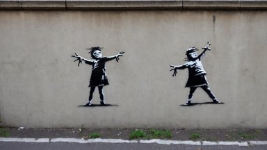
preferred: 0.2284 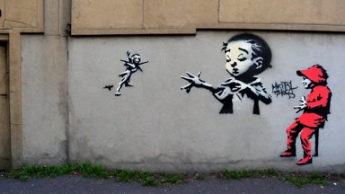
rejected: 0.3314 Preferred − rejected: -0.1030; event imagereward:test:010987-0077. Unverified.
random_audit astronaut drifting afloat in space, in the darkness away from anyone else, alone, digital render, detailed illustration, black background dotted with stars, concept art, realistic, 8 k
preferred: 0.1975 rejected: 0.1971 Preferred − rejected: +0.0005; event imagereward:test:007019-0095. Unverified.
random_audit photograph of a ten year old girl by annie leibovitz, red hair, freckles, toothless
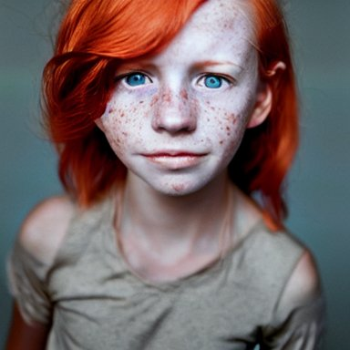
preferred: 0.3393 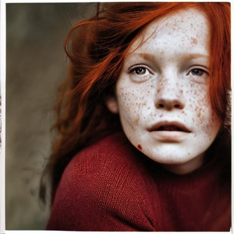
rejected: 0.3421 Preferred − rejected: -0.0028; event imagereward:test:007066-0058. Unverified.
lip-smacking (preferred direction frozen on discovery) supportive hyperrealism stock photo of highly detailed stylish humanoid robot in sci - fi cyberpunk style by gragory crewdson and vincent di fate that working in the highly detailed data center by mike winkelmann and laurie greasley rendered in blender and octane render
preferred: 0.3401 rejected: 0.2078
Preferred − rejected: +0.1323; event imagereward:test:010946-0081. Unverified.
supportive artgerm, psychedelic ben kweller, rocking out, headphones dj rave, digital artwork, r. crumb, svg vector
preferred: 0.3319 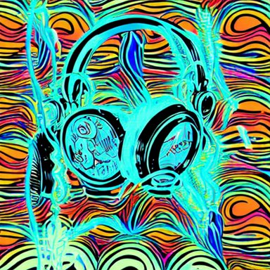
rejected: 0.2195 Preferred − rejected: +0.1124; event imagereward:test:010862-0025. Unverified.
counterexample hyperrealism stock photo of highly detailed stylish humanoid robot in sci - fi cyberpunk style by gragory crewdson and vincent di fate that working in the highly detailed data center by mike winkelmann and laurie greasley rendered in blender and octane render
preferred: 0.1908 rejected: 0.3401
Preferred − rejected: -0.1493; event imagereward:test:010946-0081. Unverified.
counterexample artgerm, psychedelic ben kweller, rocking out, headphones dj rave, digital artwork, r. crumb, svg vector
preferred: 0.2195 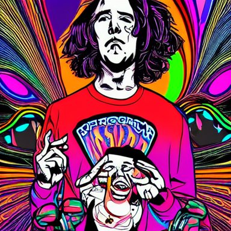
rejected: 0.3380 Preferred − rejected: -0.1185; event imagereward:test:010862-0025. Unverified.
random_audit film still from frightening horror movie. cinematic. 8 k.
preferred: 0.2957 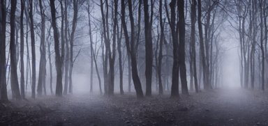
rejected: 0.2242 Preferred − rejected: +0.0714; event imagereward:test:009475-0037. Unverified.
random_audit guy fieri is very fit, makin peppermint ham patties with bacon in his kitchen
preferred: 0.2896 rejected: 0.3174
Preferred − rejected: -0.0278; event imagereward:test:009614-0104. Unverified.
stare (preferred direction frozen on discovery) supportive film still from frightening horror movie. cinematic. 8 k.
preferred: 0.3253 rejected: 0.2285 Preferred − rejected: +0.0967; event imagereward:test:009475-0037. Unverified.
supportive artgerm, psychedelic ben kweller, rocking out, headphones dj rave, digital artwork, r. crumb, svg vector
preferred: 0.2877 rejected: 0.2155
Preferred − rejected: +0.0722; event imagereward:test:010862-0025. Unverified.
counterexample hyperrealism stock photo of highly detailed stylish humanoid robot in sci - fi cyberpunk style by gragory crewdson and vincent di fate that working in the highly detailed data center by mike winkelmann and laurie greasley rendered in blender and octane render
preferred: 0.2153 rejected: 0.3116
Preferred − rejected: -0.0963; event imagereward:test:010946-0081. Unverified.
counterexample retro sci fi art of an astronaut next to jupiter in a car,
preferred: 0.2285 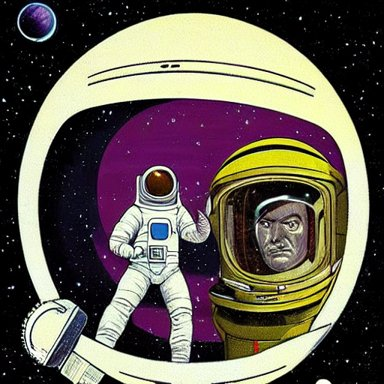
rejected: 0.3131 Preferred − rejected: -0.0846; event imagereward:test:010361-0095. Unverified.
random_audit futuristic hall, crisp, artstation, luxury, beautiful, dim painterly lighting volumetric aquatic, 3 d concept art
preferred: 0.2308 rejected: 0.2409
Preferred − rejected: -0.0101; event imagereward:test:001366-0019. Unverified.
random_audit a cat combined with a chinchilla
preferred: 0.3412 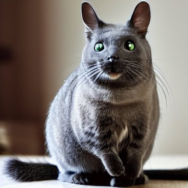
rejected: 0.3295 Preferred − rejected: +0.0117; event imagereward:test:001192-0041. Unverified.
wide-eyed (preferred direction frozen on discovery) supportive film still from frightening horror movie. cinematic. 8 k.
preferred: 0.3404 rejected: 0.2123
Preferred − rejected: +0.1282; event imagereward:test:009475-0037. Unverified.
supportive funny peanut butter
preferred: 0.3422 rejected: 0.2212 Preferred − rejected: +0.1210; event imagereward:test:010856-0009. Unverified.
counterexample highly detailed painting of uzumaki naruto fighting a looming demigod, dramatic, sense of scale, stephen bliss, unreal engine, greg rutkowski, ilya kuvshinov, ross draws, hyung tae and frank frazetta, tom bagshaw, tom whalen, nicoletta ceccoli, mark ryden, earl norem, global illumination, god rays, windswept
preferred: 0.2186 rejected: 0.3097
Preferred − rejected: -0.0910; event imagereward:test:001382-0041. Unverified.
counterexample a half - masked rugged laboratory engineer man with cybernetic enhancements as seen from a distance, scifi character portrait by greg rutkowski, esuthio, craig mullins, 1 / 4 headshot, cinematic lighting, dystopian scifi gear, gloomy, profile picture, mechanical, half robot, implants, dieselpunk
preferred: 0.2263 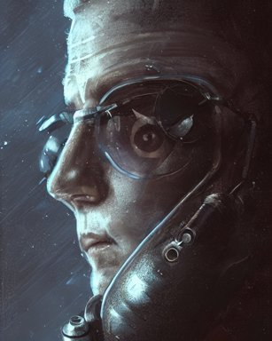
rejected: 0.3121 Preferred − rejected: -0.0858; event imagereward:test:001383-0079. Unverified.
random_audit retro scifi spaceport with a spaceship about to take off, concept art, hyper detailed, ultra realistic, octane, artstation trending, unreal engine, dramatic lighting, reflections
preferred: 0.2407 rejected: 0.2597 Preferred − rejected: -0.0190; event imagereward:test:007367-0101. Unverified.
random_audit photoreal portrait very intricate! synthwave dj wearing a black hoody, white glossy class - a surfaces, glittering light leaks, electromagnetic waves, blue glowing aggressive led eyes, zbrush, greeble skin, octane render, colani design, cyberpunk, dystopia tokyo
preferred: 0.3151 rejected: 0.3165
Preferred − rejected: -0.0014; event imagereward:test:007759-0110. Unverified.
smirk (preferred direction frozen on discovery) supportive film still from frightening horror movie. cinematic. 8 k.
preferred: 0.3169 rejected: 0.1935 Preferred − rejected: +0.1234; event imagereward:test:009475-0037. Unverified.
supportive retro sci fi art of an astronaut next to jupiter in a car,
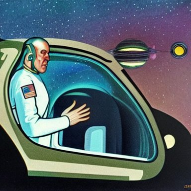
preferred: 0.3316 rejected: 0.2474 Preferred − rejected: +0.0842; event imagereward:test:010361-0095. Unverified.
counterexample hyperrealism stock photo of highly detailed stylish humanoid robot in sci - fi cyberpunk style by gragory crewdson and vincent di fate that working in the highly detailed data center by mike winkelmann and laurie greasley rendered in blender and octane render
preferred: 0.2293 rejected: 0.3175
Preferred − rejected: -0.0882; event imagereward:test:010946-0081. Unverified.
counterexample artgerm, psychedelic ben kweller, rocking out, headphones dj rave, digital artwork, r. crumb, svg vector
preferred: 0.2415 rejected: 0.3188
Preferred − rejected: -0.0773; event imagereward:test:010862-0025. Unverified.
random_audit a modern, contemporary studio apartment interior. high quality photography, 4 k.
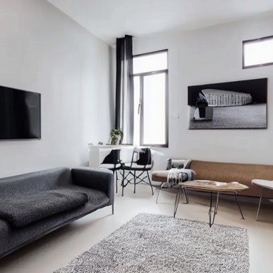
preferred: 0.2242 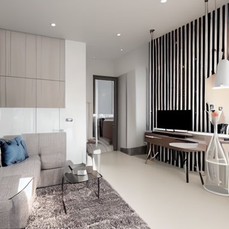
rejected: 0.2044 Preferred − rejected: +0.0198; event imagereward:test:007205-0046. Unverified.
random_audit spanish mauricio colmenero
preferred: 0.3331 rejected: 0.3428
Preferred − rejected: -0.0097; event imagereward:test:008711-0012. Unverified.
eyebrow-raising (preferred direction frozen on discovery) supportive film still from frightening horror movie. cinematic. 8 k.
preferred: 0.3246 rejected: 0.2100 Preferred − rejected: +0.1145; event imagereward:test:009475-0037. Unverified.
supportive photo of a guy playing a gameboy under the blanket in his bed at night
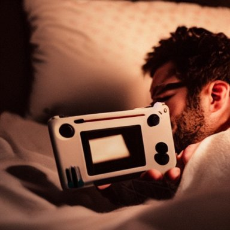
preferred: 0.2983 rejected: 0.2023 Preferred − rejected: +0.0960; event imagereward:test:001242-0093. Unverified.
counterexample hyperrealism stock photo of highly detailed stylish humanoid robot in sci - fi cyberpunk style by gragory crewdson and vincent di fate that working in the highly detailed data center by mike winkelmann and laurie greasley rendered in blender and octane render
preferred: 0.1762 rejected: 0.2887
Preferred − rejected: -0.1125; event imagereward:test:010946-0081. Unverified.
counterexample retro sci fi art of an astronaut next to jupiter in a car,
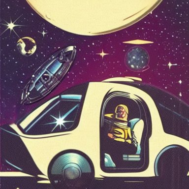
preferred: 0.1845 rejected: 0.2876 Preferred − rejected: -0.1032; event imagereward:test:010361-0095. Unverified.
random_audit portrait of a red color wolf with yellow horns in a suit, D&D, fantasy, elegant, badass, highly detailed, slim, digital painting, artstation, concept art, sharp focus, illustration
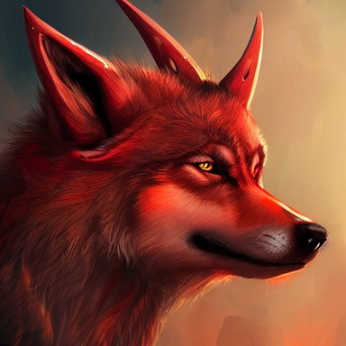
preferred: 0.2640 rejected: 0.2474 Preferred − rejected: +0.0166; event imagereward:test:009582-0143. Unverified.
random_audit the lost city by beksinski
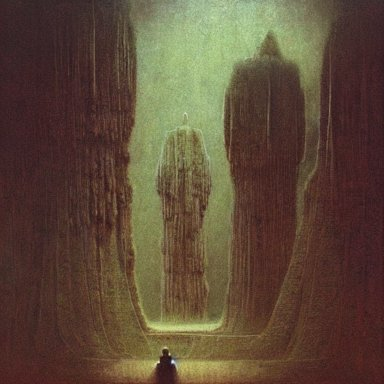
preferred: 0.2069 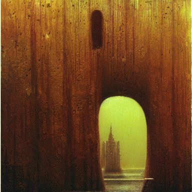
rejected: 0.1907 Preferred − rejected: +0.0162; event imagereward:test:007155-0059. Unverified.
physiognomy (preferred direction frozen on discovery) supportive retro sci fi art of an astronaut next to jupiter in a car,
preferred: 0.3282 rejected: 0.1881 Preferred − rejected: +0.1401; event imagereward:test:010361-0095. Unverified.
supportive film still from frightening horror movie. cinematic. 8 k.
preferred: 0.3348 rejected: 0.2078 Preferred − rejected: +0.1270; event imagereward:test:009475-0037. Unverified.
counterexample retro sci fi art of an astronaut next to jupiter in a car,
preferred: 0.1967 rejected: 0.3282 Preferred − rejected: -0.1314; event imagereward:test:010361-0095. Unverified.
counterexample hyperrealism stock photo of highly detailed stylish humanoid robot in sci - fi cyberpunk style by gragory crewdson and vincent di fate that working in the highly detailed data center by mike winkelmann and laurie greasley rendered in blender and octane render
preferred: 0.1871 rejected: 0.3037
Preferred − rejected: -0.1166; event imagereward:test:010946-0081. Unverified.
random_audit a portrait of a red - skinned dragonborn monk in a plain white cloak white cloak, holding a spear with a black tip, fantasy art by greg rutkowski
preferred: 0.3344 rejected: 0.3304 Preferred − rejected: +0.0040; event imagereward:test:008328-0024. Unverified.
random_audit movie still of a man and a robot in a moment of horror, movie still, cinematic composition, cinematic light, by edgar wright and david lynch
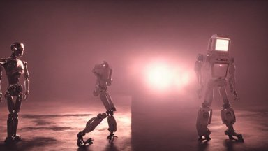
preferred: 0.2139 rejected: 0.2505 Preferred − rejected: -0.0366; event imagereward:test:007223-0095. Unverified.
strabismus (preferred direction frozen on discovery) supportive film still from frightening horror movie. cinematic. 8 k.
preferred: 0.3245 rejected: 0.2017
Preferred − rejected: +0.1228; event imagereward:test:009475-0037. Unverified.
supportive artgerm, psychedelic ben kweller, rocking out, headphones dj rave, digital artwork, r. crumb, svg vector
preferred: 0.3113 rejected: 0.2227
Preferred − rejected: +0.0887; event imagereward:test:010862-0025. Unverified.
counterexample hyperrealism stock photo of highly detailed stylish humanoid robot in sci - fi cyberpunk style by gragory crewdson and vincent di fate that working in the highly detailed data center by mike winkelmann and laurie greasley rendered in blender and octane render
preferred: 0.1919 rejected: 0.2957
Preferred − rejected: -0.1038; event imagereward:test:010946-0081. Unverified.
counterexample highly detailed painting of uzumaki naruto fighting a looming demigod, dramatic, sense of scale, stephen bliss, unreal engine, greg rutkowski, ilya kuvshinov, ross draws, hyung tae and frank frazetta, tom bagshaw, tom whalen, nicoletta ceccoli, mark ryden, earl norem, global illumination, god rays, windswept
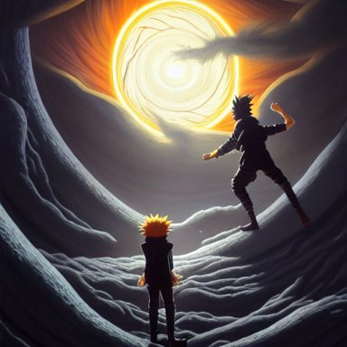
preferred: 0.1711 rejected: 0.2641 Preferred − rejected: -0.0930; event imagereward:test:001382-0041. Unverified.
random_audit A majestic landscape featuring a river, mountains and a forest. A small group of birds is flying in the sky. Harsh winter. very windy. There is a man walking in a deep snow. Cinematic, very beautiful, painting in the style of Lord of the rings
preferred: 0.1763 rejected: 0.1855 Preferred − rejected: -0.0092; event imagereward:test:007135-0056. Unverified.
random_audit colorful instant photograph of a short hair woman smoking in the street, leaning on the wall, polaroid, light leak, raw, nostalgic
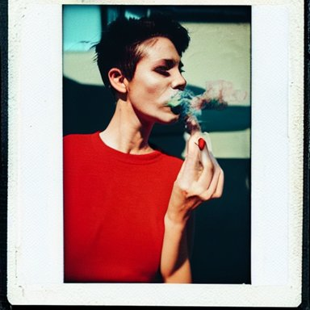
preferred: 0.2923 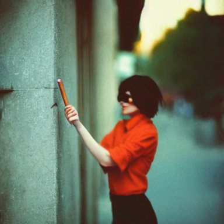
rejected: 0.2331 Preferred − rejected: +0.0593; event imagereward:test:010299-0030. Unverified.
big-eyed (preferred direction frozen on discovery) supportive film still from frightening horror movie. cinematic. 8 k.
preferred: 0.3247 rejected: 0.1747
Preferred − rejected: +0.1499; event imagereward:test:009475-0037. Unverified.
supportive funny peanut butter
preferred: 0.3303 rejected: 0.2177 Preferred − rejected: +0.1126; event imagereward:test:010856-0009. Unverified.
counterexample hyperrealism stock photo of highly detailed stylish humanoid robot in sci - fi cyberpunk style by gragory crewdson and vincent di fate that working in the highly detailed data center by mike winkelmann and laurie greasley rendered in blender and octane render
preferred: 0.2040 rejected: 0.2823 Preferred − rejected: -0.0783; event imagereward:test:010946-0081. Unverified.
counterexample mountains in the iris, macro photography, high resolution, high detail, 4K, 8K
preferred: 0.1798 rejected: 0.2558 Preferred − rejected: -0.0760; event imagereward:test:007106-0064. Unverified.
random_audit the lost city by beksinski
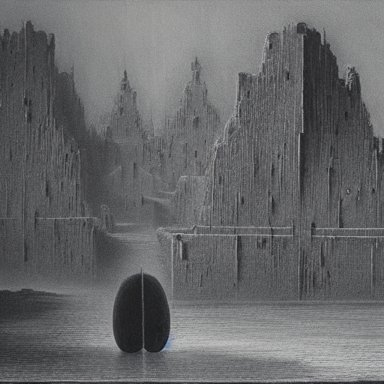
preferred: 0.1951 rejected: 0.2079 Preferred − rejected: -0.0128; event imagereward:test:007155-0059. Unverified.
random_audit Horrifying creature, haunted, horror
preferred: 0.2968 rejected: 0.2537 Preferred − rejected: +0.0432; event imagereward:test:009006-0102. Unverified.
stare-down (preferred direction frozen on discovery) supportive film still from frightening horror movie. cinematic. 8 k.
preferred: 0.3212 rejected: 0.2416 Preferred − rejected: +0.0797; event imagereward:test:009475-0037. Unverified.
supportive artgerm, psychedelic ben kweller, rocking out, headphones dj rave, digital artwork, r. crumb, svg vector
preferred: 0.2906 rejected: 0.2214
Preferred − rejected: +0.0692; event imagereward:test:010862-0025. Unverified.
counterexample artgerm, psychedelic ben kweller, rocking out, headphones dj rave, digital artwork, r. crumb, svg vector
preferred: 0.2214 rejected: 0.2959
Preferred − rejected: -0.0746; event imagereward:test:010862-0025. Unverified.
counterexample hyperrealism stock photo of highly detailed stylish humanoid robot in sci - fi cyberpunk style by gragory crewdson and vincent di fate that working in the highly detailed data center by mike winkelmann and laurie greasley rendered in blender and octane render
preferred: 0.2156 rejected: 0.2900
Preferred − rejected: -0.0745; event imagereward:test:010946-0081. Unverified.
random_audit colorful instant photograph of a short hair woman smoking in the street, leaning on the wall, polaroid, light leak, raw, nostalgic
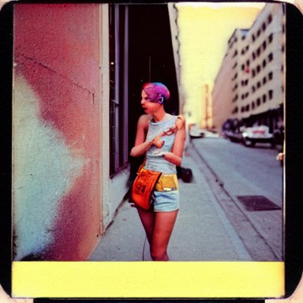
preferred: 0.2560 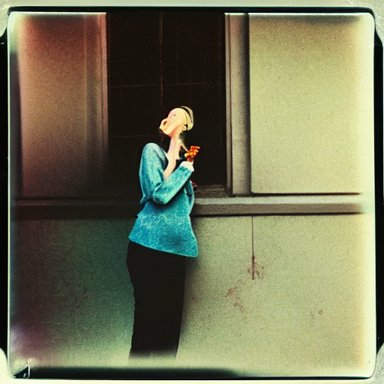
rejected: 0.2536 Preferred − rejected: +0.0024; event imagereward:test:010299-0030. Unverified.
random_audit !13 hungry cannibals making a rich salad around a marble table, !positioned as last supper cinematic lighting, dramatic framing, highly detalied, 4k, artstation, by Rene Lalique and Wayne Barlowe
preferred: 0.2691 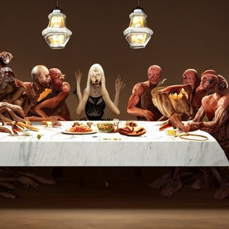
rejected: 0.2574 Preferred − rejected: +0.0117; event imagereward:test:007135-0060. Unverified.
tarmac (rejected direction frozen on discovery) supportive the pope in saving private james ryan
preferred: 0.2042 rejected: 0.3222 Preferred − rejected: -0.1180; event imagereward:test:010918-0030. Unverified.
supportive if woody and buzz from toy story had a kid pixar animation hd
preferred: 0.2431 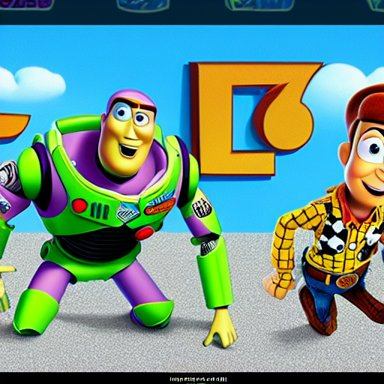
rejected: 0.3454 Preferred − rejected: -0.1023; event imagereward:test:001151-0006. Unverified.
counterexample if woody and buzz from toy story had a kid pixar animation hd
preferred: 0.3454 rejected: 0.2257 Preferred − rejected: +0.1197; event imagereward:test:001151-0006. Unverified.
counterexample retro sci fi art of an astronaut next to jupiter in a car,
preferred: 0.3425 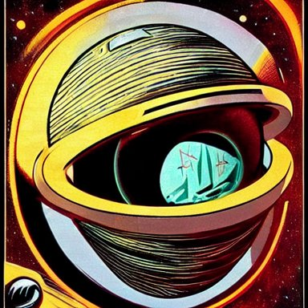
rejected: 0.2421 Preferred − rejected: +0.1004; event imagereward:test:010361-0095. Unverified.
random_audit close - up view of silhouettes watching a giant dark sci - fi alien sea creature with big glowing eyes in a giant futuristic fish tank, deep blue colors, highly detailed science fiction painting by syd mead, roger dean, and moebius. rich colors, high contrast, black background. unreal engine, artstation.
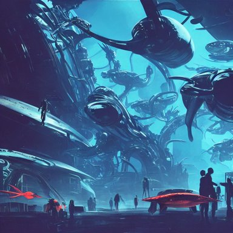
preferred: 0.3101 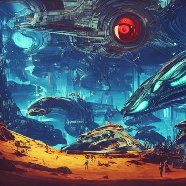
rejected: 0.2693 Preferred − rejected: +0.0408; event imagereward:test:002127-0162. Unverified.
random_audit muscular man wearing a leather harness and hat
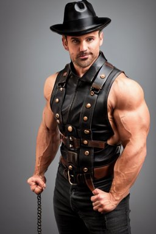
preferred: 0.2251 rejected: 0.2329 Preferred − rejected: -0.0078; event imagereward:test:007189-0066. Unverified.
hand-shaped (rejected direction frozen on discovery) supportive retro scifi spaceport with a spaceship about to take off, concept art, hyper detailed, ultra realistic, octane, artstation trending, unreal engine, dramatic lighting, reflections
preferred: 0.2018 rejected: 0.3211 Preferred − rejected: -0.1193; event imagereward:test:007367-0101. Unverified.
supportive promotional vogue studio portrait photo of Alanis Morissette
preferred: 0.1944 rejected: 0.3058
Preferred − rejected: -0.1114; event imagereward:test:008772-0049. Unverified.
counterexample promotional vogue studio portrait photo of Alanis Morissette
preferred: 0.3058 rejected: 0.1975 Preferred − rejected: +0.1083; event imagereward:test:008772-0049. Unverified.
counterexample photography of an underwater ocean scene, 8 k, cinematic lighting
preferred: 0.3045 rejected: 0.2099
Preferred − rejected: +0.0946; event imagereward:test:007780-0128. Unverified.
random_audit promotional vogue studio portrait photo of Alanis Morissette
preferred: 0.2843 rejected: 0.1975 Preferred − rejected: +0.0868; event imagereward:test:008772-0049. Unverified.
random_audit !13 hungry cannibals making a rich salad around a marble table, !positioned as last supper cinematic lighting, dramatic framing, highly detalied, 4k, artstation, by Rene Lalique and Wayne Barlowe
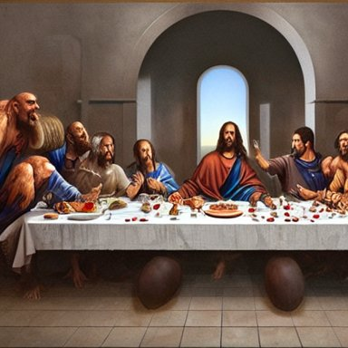
preferred: 0.2692 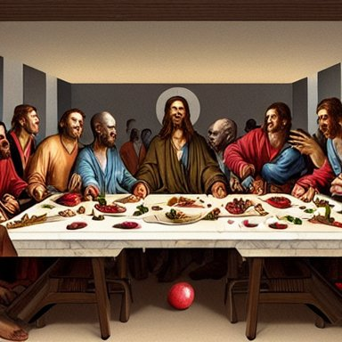
rejected: 0.2797 Preferred − rejected: -0.0105; event imagereward:test:007135-0060. Unverified.
pavement (rejected direction frozen on discovery) supportive the pope in saving private james ryan
preferred: 0.2143 rejected: 0.3612 Preferred − rejected: -0.1469; event imagereward:test:010918-0030. Unverified.
supportive a photo of a very fat green parrot.
preferred: 0.1849 rejected: 0.3272 Preferred − rejected: -0.1423; event imagereward:test:010366-0012. Unverified.
counterexample if woody and buzz from toy story had a kid pixar animation hd
preferred: 0.3699 rejected: 0.2014 Preferred − rejected: +0.1685; event imagereward:test:001151-0006. Unverified.
counterexample funny peanut butter
preferred: 0.3336 rejected: 0.1997 Preferred − rejected: +0.1340; event imagereward:test:010856-0009. Unverified.
random_audit botanical illustrations of many multicolored flowers
preferred: 0.1890 rejected: 0.2114
Preferred − rejected: -0.0224; event imagereward:test:008247-0049. Unverified.
random_audit A realistic photo of a man with big ears
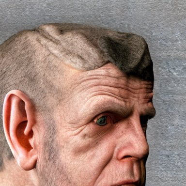
preferred: 0.2731 rejected: 0.1884 Preferred − rejected: +0.0847; event imagereward:test:001205-0101. Unverified.
dance-floor (rejected direction frozen on discovery) supportive spanish mauricio colmenero
preferred: 0.1937 rejected: 0.3124
Preferred − rejected: -0.1187; event imagereward:test:008711-0012. Unverified.
supportive a photo of a very fat green parrot.
preferred: 0.1653 rejected: 0.2735 Preferred − rejected: -0.1082; event imagereward:test:010366-0012. Unverified.
counterexample if woody and buzz from toy story had a kid pixar animation hd
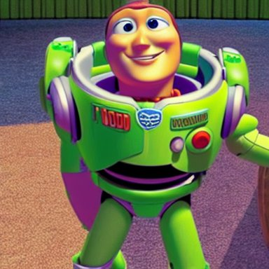
preferred: 0.2985 rejected: 0.1875 Preferred − rejected: +0.1111; event imagereward:test:001151-0006. Unverified.
counterexample beautiful human witch with blonde short curtly hair in intricate ornate witch robe, haughty evil look, witch hat. in style of yoji shinkawa and hyung - tae kim, trending on artstation, dark fantasy, great composition, concept art, highly detailed, dynamic pose.
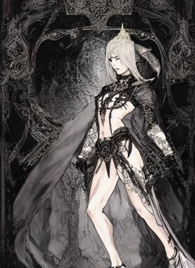
preferred: 0.3235 rejected: 0.2132 Preferred − rejected: +0.1103; event imagereward:test:009500-0056. Unverified.
random_audit a character sheet showing 4 different designs for an evil sorcerer in ornamental robes with glowing runes on fabric, holding a tall glowing ornate intricate magical staff, video game concept art by greg rutkowski, craig mullins, weta, elder scrolls
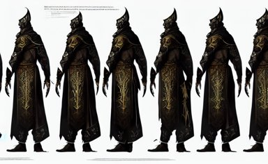
preferred: 0.2279 rejected: 0.2491 Preferred − rejected: -0.0212; event imagereward:test:008294-0028. Unverified.
random_audit if woody and buzz from toy story had a kid pixar animation hd
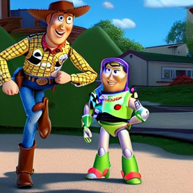
preferred: 0.2464 rejected: 0.2555 Preferred − rejected: -0.0091; event imagereward:test:001151-0006. Unverified.
asphalt (rejected direction frozen on discovery) supportive A realistic photo of a man with big ears
preferred: 0.1589 rejected: 0.2810
Preferred − rejected: -0.1221; event imagereward:test:001205-0101. Unverified.
supportive if woody and buzz from toy story had a kid pixar animation hd
preferred: 0.2131 rejected: 0.3286 Preferred − rejected: -0.1154; event imagereward:test:001151-0006. Unverified.
counterexample if woody and buzz from toy story had a kid pixar animation hd
preferred: 0.3286 rejected: 0.2000 Preferred − rejected: +0.1286; event imagereward:test:001151-0006. Unverified.
counterexample retro sci fi art of an astronaut next to jupiter in a car,
preferred: 0.3291 rejected: 0.2273
Preferred − rejected: +0.1019; event imagereward:test:010361-0095. Unverified.
random_audit retro sci fi art of an astronaut next to jupiter in a car,
preferred: 0.2668 rejected: 0.2273 Preferred − rejected: +0.0395; event imagereward:test:010361-0095. Unverified.
random_audit a photo of a very fat green parrot.
preferred: 0.2481 rejected: 0.2199 Preferred − rejected: +0.0281; event imagereward:test:010366-0012. Unverified.
shop-floor (rejected direction frozen on discovery) supportive spanish mauricio colmenero
preferred: 0.1779 rejected: 0.3388
Preferred − rejected: -0.1609; event imagereward:test:008711-0012. Unverified.
supportive beautiful human witch with blonde short curtly hair in intricate ornate witch robe, haughty evil look, witch hat. in style of yoji shinkawa and hyung - tae kim, trending on artstation, dark fantasy, great composition, concept art, highly detailed, dynamic pose.
preferred: 0.2042 rejected: 0.3223 Preferred − rejected: -0.1181; event imagereward:test:009500-0056. Unverified.
counterexample spanish mauricio colmenero
preferred: 0.3388 rejected: 0.2032
Preferred − rejected: +0.1356; event imagereward:test:008711-0012. Unverified.
counterexample close - up view of silhouettes watching a giant dark sci - fi alien sea creature with big glowing eyes in a giant futuristic fish tank, deep blue colors, highly detailed science fiction painting by syd mead, roger dean, and moebius. rich colors, high contrast, black background. unreal engine, artstation.
preferred: 0.3292 rejected: 0.2225
Preferred − rejected: +0.1067; event imagereward:test:002127-0162. Unverified.
random_audit retro sci fi art of an astronaut next to jupiter in a car,
preferred: 0.2673 rejected: 0.2886
Preferred − rejected: -0.0213; event imagereward:test:010361-0095. Unverified.
random_audit guy fieri is very fit, makin peppermint ham patties with bacon in his kitchen
preferred: 0.2082 rejected: 0.2034
Preferred − rejected: +0.0048; event imagereward:test:009614-0104. Unverified.
floor (rejected direction frozen on discovery) supportive spanish mauricio colmenero
preferred: 0.2093 rejected: 0.3385
Preferred − rejected: -0.1292; event imagereward:test:008711-0012. Unverified.
supportive beautiful human witch with blonde short curtly hair in intricate ornate witch robe, haughty evil look, witch hat. in style of yoji shinkawa and hyung - tae kim, trending on artstation, dark fantasy, great composition, concept art, highly detailed, dynamic pose.
preferred: 0.2013 rejected: 0.3194 Preferred − rejected: -0.1181; event imagereward:test:009500-0056. Unverified.
counterexample if woody and buzz from toy story had a kid pixar animation hd
preferred: 0.3114 rejected: 0.1810 Preferred − rejected: +0.1305; event imagereward:test:001151-0006. Unverified.
counterexample spanish mauricio colmenero
preferred: 0.3385 rejected: 0.2284
Preferred − rejected: +0.1100; event imagereward:test:008711-0012. Unverified.
random_audit spanish mauricio colmenero
preferred: 0.2093 rejected: 0.3100
Preferred − rejected: -0.1007; event imagereward:test:008711-0012. Unverified.
random_audit Horrifying creature, haunted, horror
preferred: 0.2558 rejected: 0.2381 Preferred − rejected: +0.0177; event imagereward:test:009006-0102. Unverified.
torso (rejected direction frozen on discovery) supportive !13 hungry cannibals making a rich salad around a marble table, !positioned as last supper cinematic lighting, dramatic framing, highly detalied, 4k, artstation, by Rene Lalique and Wayne Barlowe
preferred: 0.2276 rejected: 0.3149 Preferred − rejected: -0.0873; event imagereward:test:007135-0060. Unverified.
supportive huge hulking creature, muscular and terrifying, unsettling, creepy, epic hairy monster terrifying covered in dark fur and matted mud with glowing green eyes, concept art, digital character art, artstation, cgsociety
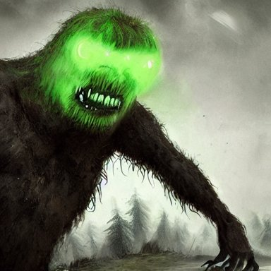
preferred: 0.2463 rejected: 0.3330 Preferred − rejected: -0.0867; event imagereward:test:007170-0061. Unverified.
counterexample huge hulking creature, muscular and terrifying, unsettling, creepy, epic hairy monster terrifying covered in dark fur and matted mud with glowing green eyes, concept art, digital character art, artstation, cgsociety
preferred: 0.3331 rejected: 0.2463 Preferred − rejected: +0.0868; event imagereward:test:007170-0061. Unverified.
counterexample realistic photography of a man 3 5 years old with a bit of bear, short hair, few wrinkles around eyes, sexy, cinematographic, cinematic light, close up view, intense, colorize, 8 0 mm lens
preferred: 0.3952 rejected: 0.3125 Preferred − rejected: +0.0826; event imagereward:test:001260-0073. Unverified.
random_audit raytraced render and digital painting of the inconceivable and spectacular a scene of complete madness, by greg rutkowski and michelangelo buonarroti and kinkade, cosmic entities, celestial, cosmic, luxury, elegant, ornate, vibrant and vivid, smooth, soft billowing smoke, darkness, bright, heavenly, elegant, swirls, cosmic flower, nebula vines, nebula tree, twirling, billowing, cinematic, unrealistic, high contrast, hdr, 4 k, artstation, cgsociety, unreal engine, symobolism, magical, mystical, mystifying, obscure, perplexing, zbrush, octane, hyperrealistic, bokeh, dof
preferred: 0.3017 rejected: 0.3165 Preferred − rejected: -0.0148; event imagereward:test:008151-0078. Unverified.
random_audit psychedelic multicolor clouds, god rays, volumetric lighting, dynamic intricate ornate
preferred: 0.2337 rejected: 0.2368 Preferred − rejected: -0.0031; event imagereward:test:001286-0047. Unverified.
dispersion (rejected direction frozen on discovery) supportive film still from frightening horror movie. cinematic. 8 k.
preferred: 0.2266 rejected: 0.2967 Preferred − rejected: -0.0701; event imagereward:test:009475-0037. Unverified.
supportive mountains in the iris, macro photography, high resolution, high detail, 4K, 8K
preferred: 0.2283 rejected: 0.2939 Preferred − rejected: -0.0656; event imagereward:test:007106-0064. Unverified.
counterexample A majestic landscape featuring a river, mountains and a forest. A small group of birds is flying in the sky. Harsh winter. very windy. There is a man walking in a deep snow. Cinematic, very beautiful, painting in the style of Lord of the rings
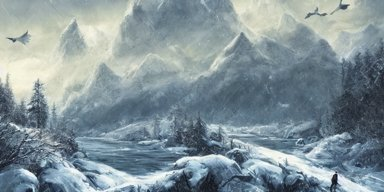
preferred: 0.2709 rejected: 0.2171 Preferred − rejected: +0.0538; event imagereward:test:007135-0056. Unverified.
counterexample two beautiful identical female fighters facing each other, jean shorts, white top, dim lighting, gorgeous features, high resolution, detailed digital anime art
preferred: 0.2681 rejected: 0.2164 Preferred − rejected: +0.0517; event imagereward:test:011032-0049. Unverified.
random_audit !13 hungry cannibals making a rich salad around a marble table, !positioned as last supper cinematic lighting, dramatic framing, highly detalied, 4k, artstation, by Rene Lalique and Wayne Barlowe
preferred: 0.2284 rejected: 0.2179 Preferred − rejected: +0.0105; event imagereward:test:007135-0060. Unverified.
random_audit astronaut drifting afloat in space, in the darkness away from anyone else, alone, digital render, detailed illustration, black background dotted with stars, concept art, realistic, 8 k
preferred: 0.3031 rejected: 0.2881 Preferred − rejected: +0.0149; event imagereward:test:007019-0095. Unverified.
bullet-shaped (rejected direction frozen on discovery) supportive portrait of a red color wolf with yellow horns in a suit, D&D, fantasy, elegant, badass, highly detailed, slim, digital painting, artstation, concept art, sharp focus, illustration
preferred: 0.2151 rejected: 0.3161 Preferred − rejected: -0.1010; event imagereward:test:009582-0143. Unverified.
supportive 3D render of a cute tribal anime boy in a loincloth, fantasy artwork, fluffy hair, mid-shot, award winning, ray tracing, hyper detailed, very very very beautiful, studio lighting, artstation, unreal engine, unreal 5, 4k, octane renderer
preferred: 0.1991 rejected: 0.2890
Preferred − rejected: -0.0899; event imagereward:test:007133-0110. Unverified.
counterexample the lost city by beksinski
preferred: 0.3375 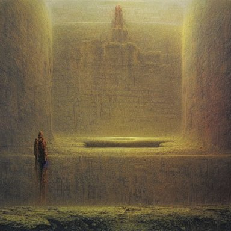
rejected: 0.2591 Preferred − rejected: +0.0784; event imagereward:test:007155-0059. Unverified.
counterexample portrait of a red color wolf with yellow horns in a suit, D&D, fantasy, elegant, badass, highly detailed, slim, digital painting, artstation, concept art, sharp focus, illustration
preferred: 0.2889 rejected: 0.2151 Preferred − rejected: +0.0738; event imagereward:test:009582-0143. Unverified.
random_audit seascape with big waves and sunset painted with oil paints in Kuindzhi style
preferred: 0.2844 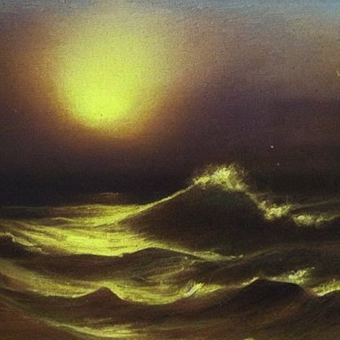
rejected: 0.2638 Preferred − rejected: +0.0206; event imagereward:test:008252-0002. Unverified.
random_audit if woody and buzz from toy story had a kid pixar animation hd
preferred: 0.2766 rejected: 0.2593 Preferred − rejected: +0.0174; event imagereward:test:001151-0006. Unverified.